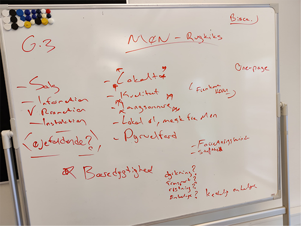
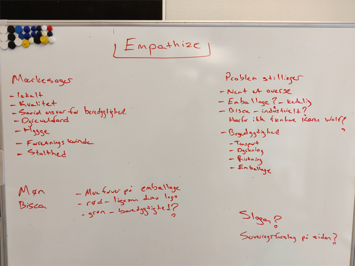

KAREN WOLF´S MØN KIKS
Produkt af research fasen:
Vi har valgt med fokuspunkt at promovere Biscas MØN Kiks med fokus på markedsføring og at fremhæve Karen Volf, lokale råvare og emballage, slogan.
Vi fandt bl.a. frem til hvilke mærkesager mærket har:
- Lokalt
- Kvalitet
- Dyrevelfærd
- Bæredygtighed
Mærket bruger “hyggestemning” til markedsføring af produkterne.
Problemstillinger ved produktet:
- Nemt at overse grundet brugen af farverne
- Bisca logoet ser industrielt ud
- Kedelig design
Vi har valgt at promovere produktet igennem vores hjemmeside, hvor vi lægger stor vægt på at fremhæve Karen Volf mere. Derudover vil vi sætte i fokus at varerne er fremstillet med lokale råvare og bruge deres emballage og slogan.
 Resultat af Design Fasen - Wireframes, moodboards, prototyper
Vi startede med at tjekke hvordan det originale side ser ud og hvad der kunne gøres bedre. Så fandt vi frem til at vores produkt er produceret af Karen Volf selvom det bliver solgt under navnet Bisca.
Efter nogle klik ind på siden, fandt vi en underside der hedder Møn og en ret god historie om hvordan mærket Karen Volf opstod. Det ville vi så fremhæve ind på vores side.
Kiksen er en forholdsvis dyr kiks, da kvalitet og prisen ofte følges hånd i hånd. Derfor har vi også lavet et enkelt og stilfuldt design for at signalere dette.
Vi lavede sammen nogle forskellige forslag på wireframes, hvor vi derefter fandt fordele og ulemper ved de forskellige wireframes, så vi kunne tage alle de gode ting og skabe en ny wireframe, som vi brugte til at arbejde videre med.
Derefter testede vi vores wireframe på nogle fra klassen, som hjalp os frem til ændringer. Fx hvor mange billeder der skulle være under serveringsforslag.
Derudover hjalp testen os også frem til en ændring i afsnittet “lignende produkter”. På Mobilversionen havde vi et andet antal produkter end på computerversionen. Det lavede vi om til at det blev det samme antal.